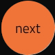

ASN RHIZO-NETWORK

ASN provides a platform for the artistic, scientific and technological milieus. It develops and
supports interdisciplinary projects, organizes international exhibitions, discussion panels
and “artists in laboratories” residence programs and interdisciplinary workshops. ASN team,
members and partners are professionals – theorists and practitioners from multiple organizations and
institutions found all over the world. Public engagement and education are one of the most
important challenges for the art and science communities. That is why ASN develops innovative e
communication strategies for the benefit of the society of knowledge.
ASN provides a platform
for the artistic, scientific and technological milieus. It develops and supports interdisciplinary
projects, organizes international exhibitions, discussion panels and “artists in laboratories”
residence programs and interdisciplinary workshops. ASN team, members and partners are
professionals – theorists and practitioners from multiple organizations and institutions found all
over the world. Public engagement and education are one of the most important challenges for
the art and science communities. That is why ASN develops innovative e communication strategies
for the benefit of the society of knowledge.
ASN provides a platform for the artistic, scientific and technological milieus. It develops and
supports interdisciplinary projects, organizes international exhibitions, discussion panels and
“artists in laboratories” residence programs and interdisciplinary workshops.
ASN team, members
and partners are professionals – theorists and practitioners from multiple organizations and
institutions found all over the world.